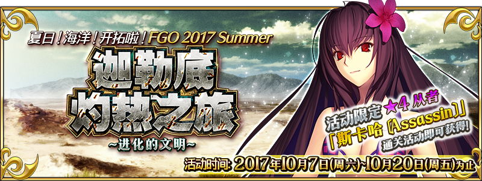
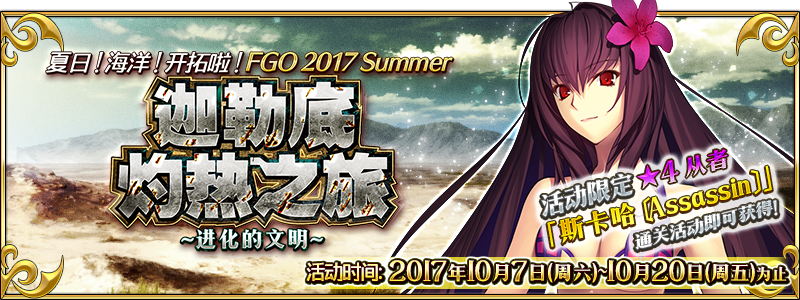

-
- ★☆★
- 引用本站的翻譯請註明本站名稱或網址
本站不像其他網站可以分工合作統整資料
而是獨自一人憑藉熱忱製作分享
引用本站的翻譯請註明本站名稱或網址
-
- ★☆★
- 本週Master任務(4/29 23:00～5/6 22:59)
任務 獎勵 No.1：通過這週全部的Master任務 x3No.2：靠『Apocrypha/Inheritance of Glory』的戰利品新獲得50個「駿鷹娃娃」 x3No.3：靠『Apocrypha/Inheritance of Glory』的戰利品新獲得50個「伊利亞德紙片」 x3No.4：靠『Apocrypha/Inheritance of Glory』的戰利品新獲得50個「賢者粉筆」 x3No.5：靠『Apocrypha/Inheritance of Glory』的戰利品新獲得合計200個「駿鷹娃娃」「伊利亞德紙片」「賢者粉筆」 x3No.6：通過任5次『Apocrypha/Inheritance of Glory』的關卡 x3No.7：通過任10次『Apocrypha/Inheritance of Glory』的關卡 x3
- ★☆★
- 【重要】Ver.1.11.0以後，關於從推薦環境以外的遊玩
-
- ★☆★
- 繁中(療癒沙灘、進化文明)/簡中(復刻GUDAGUDA)活動資訊頁面
測試頁面，不保證其後之維護
可在過去活動翻譯公告的活動概要區找到右側圖示連結到已建立的活動資訊頁面
 


- 9/27
- 【重要】關於於iOS 11的應用程式更新
- 4/10
- 【來自迦勒底廣報局】Fate/Grand Order 迦勒底放送局SP Fate/Apocrypha特別活動舉辦記念舞台的告知
☛「Lostbelt No.1」新登場Servant未隱藏真名
- 4/29
- 期間限定Fate/Apocrypha×Fate/Grand Order特別活動「Apocrypha/Inheritance of Glory」


| ・在「迦勒底放送局SP Fate/Ap特別活動記念」發表的新情報 | ||||
| ・4/25維修公告(12:00實施) | ・4/27程式更新(Ver.1.39.1) | ・4/28程式更新(Ver.1.39.2) | ・4/29遊戲更新(19:00實施) | |
◆Servant◆
・新增Servant


◆概念禮裝◆
・新增概念禮裝


◆隱藏數值◆
・新增敵人

◆活動相關◆
- 4/18
- 期間限定活動「復刻:星之三藏醬，遠赴天竺 輕量版」


| ・4/18遊戲更新(17:00實施) |
◆活動相關◆
| 官方推特 |
|